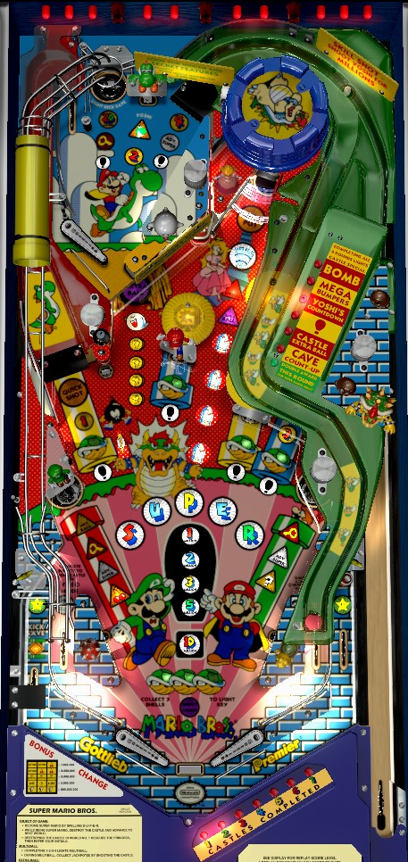

Not to be confused with Super Mario Bros. Mushroom World (also Premier Gottlieb, 1992), a miniature pinball table designed as a ticket redemption game for children.
The safest, most consistent points come from making laps around the table via the left ramp and the green slide, earning Quick Shot as much as possible. However, other features can be very valuable, and should not be avoided if started. Collect 1-2-3-4 in order to light the lower left saucer for Multiball, where the Castle is the jackpot. Collect 3 lit green turtle shells to light the Keys for a mode start; Bomb and Exclamation modes are the best ones. Use the green slide and lower saucers to earn Super letters; while Super, all mode scoring is doubled, and multiball will have 3 balls instead of 2.
Super Mario Bros. has a button plunger that sends the ball to the upper playfield. For the skill shot, shoot the Yoshi target on the upper playfield to score 3,000,000 points. Normally, you have to hit the Yoshi target 3 times in one trip to the upper playfield to earn this 3,000,000 award. Any hit to the Yoshi target adds 500,000 points to the end of ball bonus and briefly lights the Feather target next to the left ramp for 5,000,000 points.
One of the overarching goals of this game is to become Super Mario to destroy castles or enhance other scoring opportunities. The green slide will spot the first 4 letters in Super; shoot either lower saucer to earn the 5th letter. You can also be spotted one Super letter or all remaining Super letters from the ? Block mystery award. Becoming Super lights the left out lane kickback and raises the Shield drop target in between the flippers. If the kickback is used or the Shield is hit (causing it to be lowered), Super ends. While Mario is in Super mode:
If Super ends because the left kickback or center Shield target are used, the Feather target just to the right of the left ramp will flash very quickly for a few seconds. Hitting this target while it is flashing quickly instantly restores Super mode. This instant Super restart can be used once per ball.
Quick Shot is generally considered the most efficient and safest points in the game, and for good reason- it can be game-breaking for good players and/or on easy settings. When no mode is running, the right in lane lights the left ramp for Quick Shot for about 3 seconds. Quick Shot's value starts at 1,000,000 points at the beginning of each ball, and increases each time a Quick Shot is made: first to 2,000,000, then 5,000,000, then extra ball, then 7,000,000, then 10,000,000, then 15,000,000, and every shot thereafter is worth the maximum value of 20,000,000. With good accuracy, this shot can be looped: right flipper -> left ramp -> upper playfield -> green slide -> right in lane, and repeat. If you can make laps around the table by repeating this cycle, you can get pretty much as many points as you want.
The 20,000,000 point maximum for Quick Shot is only on easiest settings. The maximum value of Quick Shot can be lowered to 10,000,000, 7,000,000, or 5,000,000.
The extra ball can only be earned from Quick Shot once per game. After it has been collected, the Quick Shot value goes straight from 5,000,000 for the third shot to 7,000,000 for the fourth. If the maximum Quick Shot value is set to 5,000,000, it will be impossible to earn the Quick Shot extra ball.
Four shots around the playfield have Koopa green turtle shell inserts in front of them. These four shots form two pairs: the left ramp and center standup target are one pair, and the right standup target and right orbit are another pair. One Koopa shell in each pair will be lit at any time; pop bumpers and slingshots alternate which shot in each pair is lit. Making a shot with a lit green Koopa shell will play a coconut sound effect and light one of the shells near the flippers. Collecting 3 shells awards a Key, which allows you to start a main mode at any of the game's saucers (left, right, castle, or upper playfield hole). When you enter a saucer after collecting the Key, you're given the choice of two modes; make your decision with the left or right flipper. If you do not make a choice, the game will start the mode on the left automatically. Modes cannot be replayed until all 6 have been played. If you have played exactly 5 modes out of the current set, the left flipper will have the remaining mode, and the right flipper will be an instant 3,000,000 points, which is never worthwhile. Remember that if you start a mode while in Super status, all scoring in that mode is doubled. Exactly which two modes are presented to you for selection seems to be completely random.
The 6 main modes are:
There is no wizard mode available for playing all 6 modes; instead, the Castle will be lit for Special, and all 6 modes will be eligible to be replayed immediately.
Modes and Multiball can be stacked with one another. If a mode is started during multiball, you'll be prompted to make a flipper choice while other balls are in play, which can be quite chaotic and lead to unintended decisions. It is also possible to have 2 modes running at once, if one mode was started via the normal Key means and the other mode was started from the ? Block mystery award.
To qualify multiball, complete 1-2-3-4 in order. #1 is on the left ramp; #2 is the Yoshi target; #3 is the right orbit; #4 is the green slide. Completing 1-2-3-4 in order lights the left saucer on the main playfield for Multiball for about 20 seconds. If multiball is not started in this time, you must complete all of 1-2-3-4 in order again to relight it. If the final ball of the game has started and you have not played multiball yet, the left saucer will be lit for multiball and not time out. Multiball always starts as a 2-ball mode, unless you are currently Super, in which case multiball will have 3 balls.
In multiball, the Castle is the jackpot shot. The first jackpot always scores 5,000,000 points, and the second jackpot always scores 10,000,000. On hard settings, 10,000,000 is the max jackpot value; on easy settings, the third jackpot scores 20,000,000, and all jackpots starting with the 4th score 40,000,000. There is no ball save, grace period, or quick multiball restart of any kind on multiball.
When no mode is running, each shot to the Cave on the left lights one of the coin inserts. Lighting all 4 coins qualifies a timed Extra Ball at the cave. At first, the extra ball is lit for 8 seconds; this is reduced to 4 seconds after the Cave extra ball has been collected once, and 2 seconds after the Cave extra ball has been collected twice. Any shot to the Cave lights the left saucer for a Bonus Chance.
Bonus Chance is a brief slot machine video mode. The player has no control over where the slot machine lands. Point awards are given based on what combination of symbols appear in the middle row on the DMD when the reels stop.
If Bonus Chance is not lit, shoot the Cave to relight it. ? Block mystery can give 3 Bonus Chances as an award. In Tournament mode, Bonus Chance always lands on "one right cherry" for 1,000,000 points.
Mystery is lit by shooting the right orbit. The actual mystery light is in front of the lower right saucer, but if it is lit, you can also collect the Mystery award by shooting the Castle. Below is a list of awards I've seen from the ? Block mystery award; it is almost certainly not exhaustive.
When no mode or multiball is running, the left in lane lights one Bullet Bill in front of the Castle shot. Lighting all 4 Bullet Bills means video mode will start on the next shot to the Castle. Video mode is a simple platforming level in the vague style of Super Mario Bros. video games. Mario walks to the right on his own, and cannot move left; hold the right flipper to make him run faster, and press the left flipper to make him jump. If Mario touches the oncoming Bullet Bill in any way, or if the game considers Mario to not have solid ground under his feet at any point, the video mode ends, with a consolation prize of up to 5,000,000 points depending on how far you made it. If you make it to the end, you receive 10,000,000 points, or 30,000,000 if you held the run button the whole time.
This video mode is surprisingly strict and difficult to complete. Unlike in the Mario video games, Mario cannot stomp on the Bullet Bill; landing on it from above will end the video mode in a loss.
Super Mario Bros. has a conventional in/out lane setup. The left in lane lights a Bullet Bill toward qualifying video mode if no main mode is running. The right in lane lights the left ramp for Quick Shot is no main mode is running. The left out lane has an automatic kickback that unlights once used; it is usually lit for free at the start of each ball and is relit by spelling Super. The right out lane has a ball save available whenever Invincible is running, indicated by the star. Between the flippers is a single drop target that acts as a one-time drain shield, and is re-raised by completing Super, earning Raise Shield from the ? Block mystery, or starting Invincible. The flippers are standard 90s Gottlieb catch-all flippers, which raise to a rather high angle and make catching the ball deceptively easy on many occasions.
Yoshi's Bonus starts at 500,000 points. Any hit to the Yoshi target on the upper playfield adds 500,000 points to Yoshi's Bonus. The Double Yoshi's Bonus award multiplies the entire current Yoshi's Bonus by 2. Yoshi's Bonus is not reset throughout the game. I do not know its exact maximum, but it can exceed 100,000,000 points. If you've gotten Double Yoshi's Bonus from the mystery award a couple times, it's worthwhile not to tilt your ball.
The game manual does not list settings that assign a point value to extra ball or Special. If such a setting does exist, I would expect extra ball and Special to be worth somewhere between 10,000,000 and 50,000,000 points.
Mode timers can be set to Slowest, Slow, Average, Faster, or Fastest. I do not know the exact effects these settings have, but be aware that mode timers may not exactly match those printed throughout this guide.
On easy settings, the left kickback is briefly lit by making the left in lane, and does not unlight if used during a main mode. On hard settings, the kickback will time out about 20 seconds after being lit, even if it was not used; hard settings also do not light the kickback for free on each ball.
Video mode can be set to More time, Average time, or Less time. I have no idea how this would manifest itself in the actual video mode gameplay.